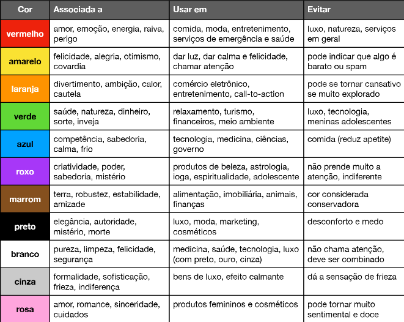

A harmonia das cores e do conteúdo de um site têm poder para definir o quanto o usuário se interessará pelo seu produto/serviço.
Geralmente nem sabemos dizer o porquê de acharmos algo bonito, agradável, mas muitas vezes isso se dá pelo conjunto e pela harmonia das cores daquele elemento.
O azul, por exemplo, tem conceitos como profissionalismo, calma, segurança, integridade, competência, confiança e geralmente é utilizado por empresas e serviços de tecnologia (exemplos: Dell, Intel, Facebook, LinkedIn, HP).
